Open a Repository #
- Open a repository with
Cmd+O, the app menu, the Dock recent-repositories menu, or the CLI launcher:jayjay /path/to/repo. - Open the current terminal directory with
jayjay .after installing the bundled CLI launcher. - If you open a folder that is not a jj repository, JayJay shows an onboarding view with a
jj git initpath. - JayJay watches the repository and working tree, then refreshes when jj operations or file edits change the repo.
Main Window #
- The left graph shows jj changes as a DAG with lanes for forks, merges, bookmarks, tags, conflicts, divergent changes, and working-copy state. Each row shows bookmark and tag chips, the author avatar, a relative timestamp, and the shortest unique change-id prefix highlighted.
- The detail header shows the selected change, description, author, status, bookmarks, PR state, and available actions. The change-id and commit-id are shown with their shortest unique prefix in bold.
- The file column lists changed files in flat or tree form and shows review status, conflicts, renames, and file-level actions.
- The diff pane shows the selected file with unified or side-by-side layout, syntax highlighting, word-level changes, and collapsed context.
- The status bar surfaces repository state, selected bookmark PR links/checks, and useful workspace context.
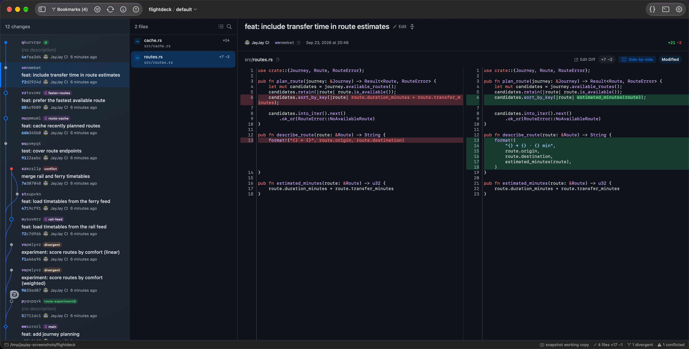
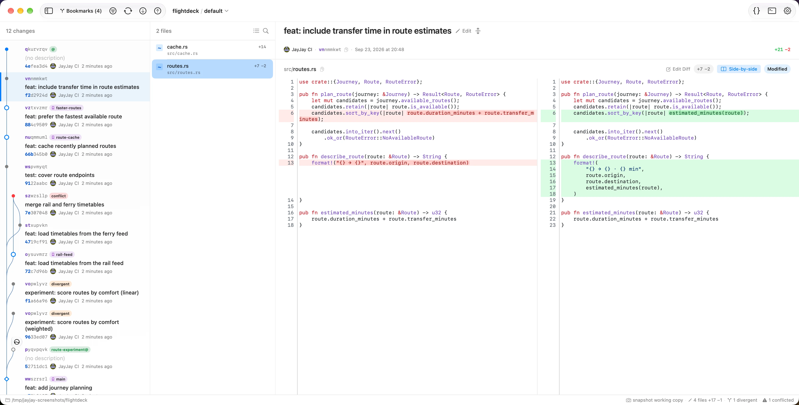
Review Diffs #
- Review your working copy like a pull request: step through the changed files and press
Spaceto tick each one off with its review checkbox. Hide reviewed files to focus on what's left. - Toggle between unified and side-by-side diffs, and browse changed files as a flat list or a tree.
- Use
Cmd+Fto search within the current diff. - Review state is local to your machine and survives app restarts. Marks invalidate when a file's old or new content changes, but survive rebases that keep the same bytes.
- Image files render as images where possible; SVG files can be viewed as source or rendered output.
- Renames, collapsed context, and ignore-whitespace behavior are reflected in the diff view. Copying diff text excludes gutter line numbers.
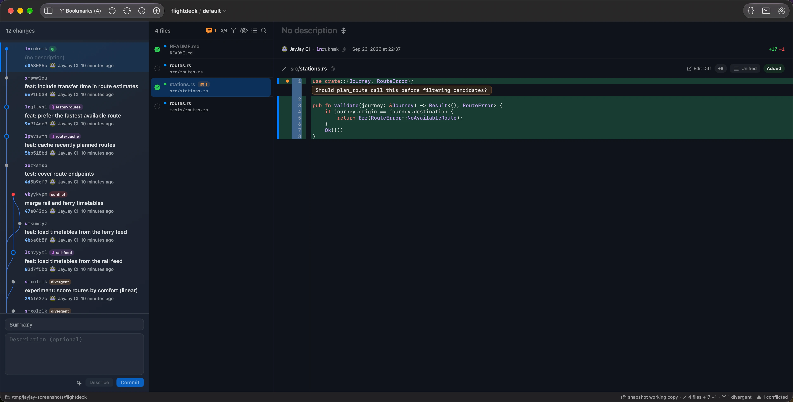
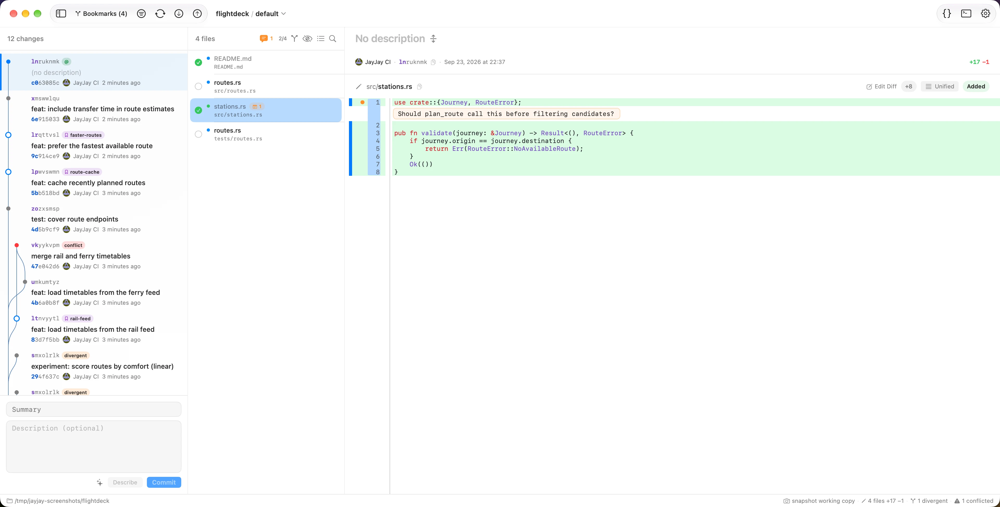
Space ticks each file's review checkbox.Compare Changes #
- Shift-click two graph revisions to compare them. When both have bookmarks, JayJay uses bookmark names in the compare banner.
- Use the compare direction control to switch the diff direction.
- Bookmark diff is useful for PR-style review: compare the main bookmark or fork point against a feature bookmark.
- Interdiff mode uses the same unified and side-by-side renderers, but hides working-copy review controls because the comparison is not a file-review session.
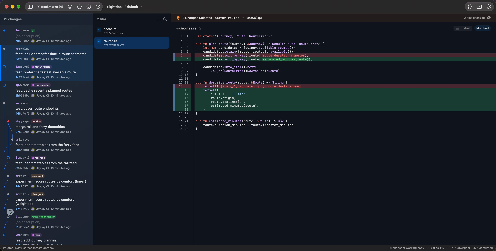
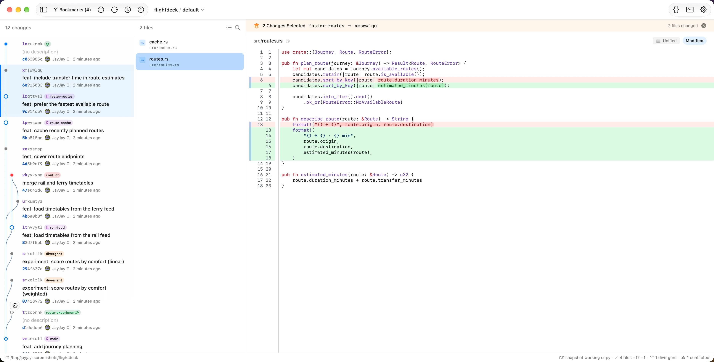
Edit Diffs & Split Work #
- Diff edit mode lets you select files, hunks, or line ranges from a change.
- Selected edits can become a child change, a parallel change, or be moved into the working copy. Working-copy edits can be discarded at selected line granularity.
- Batch split can use reviewed files as the selection model. Split supports a parallel option when the selected edits should become a sibling instead of a child.
- Topology-aware destinations preserve the intended jj graph shape when moving edits.
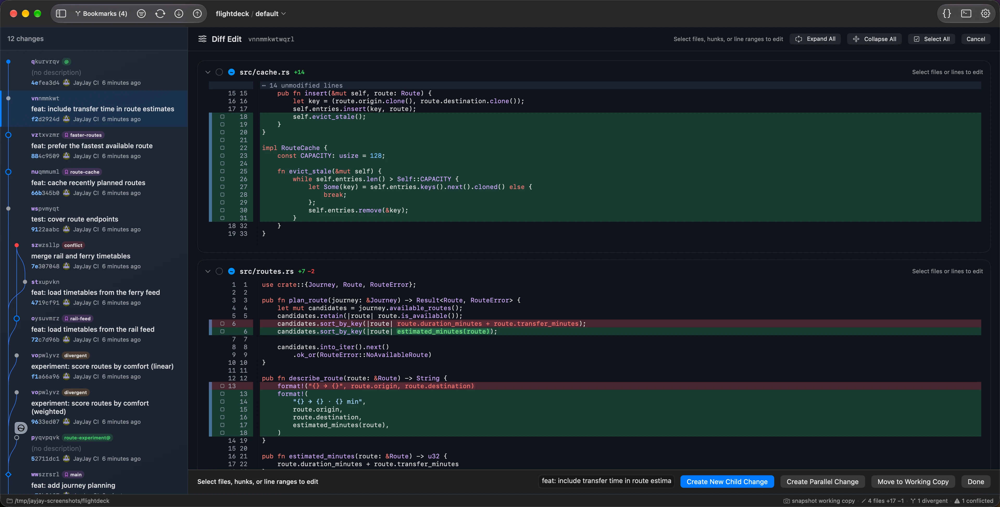
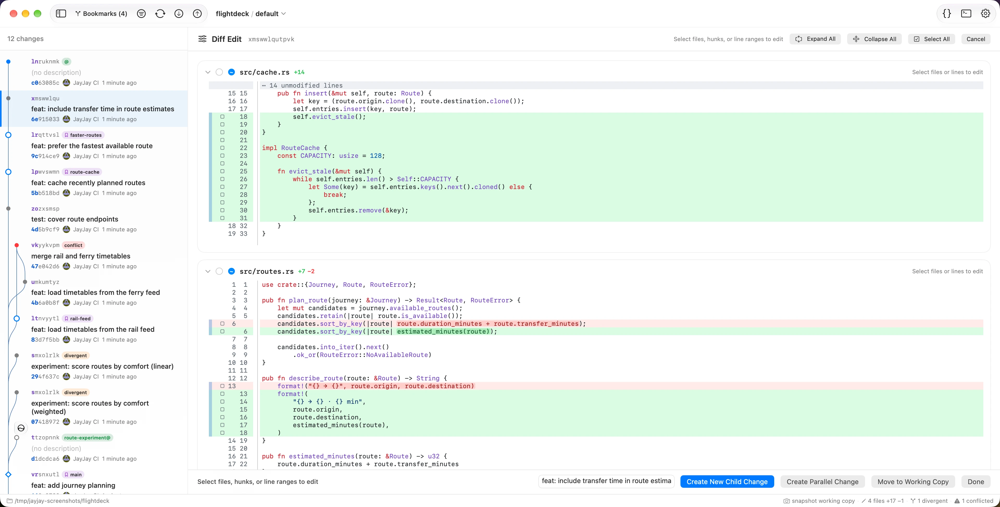
Change Operations #
- Edit a change description directly, or use the commit box to describe and commit the working copy.
- Generate commit messages with the AI provider chain: Codex CLI, Claude CLI, then Apple Intelligence when available.
- Create new changes, edit an existing change, squash into a parent, abandon, duplicate, graft, merge, absorb into ancestors, and back out changes.
- Restore, ignore, or untrack working-copy files from file actions where applicable, and move selected files from any change into the working copy.
- Use Undo to inspect the jj operation log and roll back recent operations. JayJay shows lightweight toasts for completed actions and keeps the rest of the window usable when possible.
Bookmarks, Git & Pull Requests #
- Use the Bookmark Manager (
Cmd+Shift+B) to inspect bookmark stats, filter bookmarks, reveal their changes, copy names, diff them, resolve conflicts, and clean up stale entries. - Use bookmark actions to create, rename, track, move forward, delete, and push bookmarks, or drag a bookmark chip in the DAG to move it onto any change.
- After moving a remote-tracking bookmark by drag, a one-click Push affordance appears in the sidebar so you can publish the move (it never pushes automatically).
- Push and fetch Git remotes from JayJay; push can auto-track a bookmark when needed.
- Right-click a bookmark in the DAG or Bookmark Manager to open a GitHub, GitLab, or Codeberg pull/merge request. If a matching PR or MR already exists, JayJay opens it; otherwise it opens the provider's compose page.
- The status bar can show the selected bookmark's PR/MR link and CI check status via the GitHub
ghCLI, the GitLab REST API, or Codeberg's Forgejo API. Private GitLab projects use aGITLAB_TOKENenvironment variable. - Remote repository URLs can be opened in the browser, including
git@...URLs converted to HTTPS.
Stacked Pull Requests #
Turn a linear stack of changes into one PR (GitHub) or MR (GitLab) per change, each targeting the one below it.
- Right-click the tip change in the DAG and choose Create / Update Stacked PRs. Whatever change you click becomes the top of the stack; everything from just above
trunk()up to it is included. - The preview shows one row per change — bottom-first targeting your default branch (
main), each higher one targeting the bookmark below it. Each row's branch name is editable (pencil → edit → Done); when Apple Intelligence is available, Generate bookmarks suggests names from the commit messages. Existing bookmarks are reused unchanged. - Submit pushes every bookmark at once, then creates or updates the PRs/MRs with their dependent bases; Done opens each page. Re-running is idempotent — bookmarks anchor on the change-id, so it updates the same PRs instead of duplicating.
- Merging: merge bottom-up (the one targeting
mainfirst). After each merge, runjj git fetchand Create / Update Stacked PRs again — JayJay re-targets the next PR tomainitself. Don't rely on the forge to auto-retarget: GitHub only does so when the merged branch is auto-deleted on merge, and GitLab retargets but may add a merge commit (both are repo settings). - Requires an authenticated
ghCLI (GitHub) orglabCLI (GitLab). The forge is taken from the repo'soriginremote; Codeberg is not yet supported.
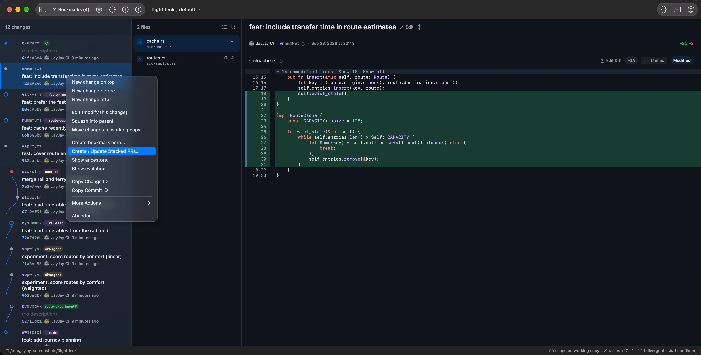
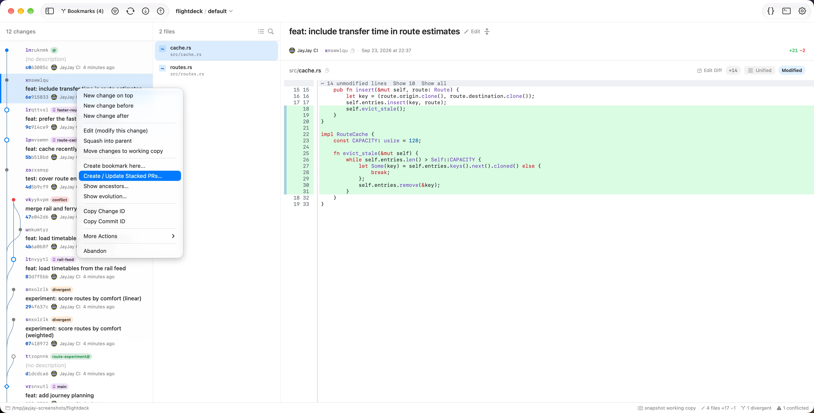
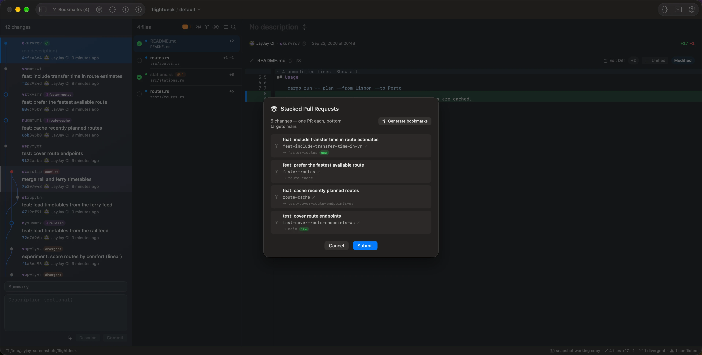
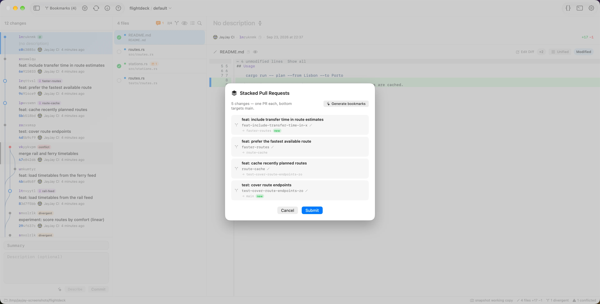
Conflict Resolution #
- Conflicted changes and files are marked in the graph and file list.
- The conflict bar offers one-click Use Ours and Use Theirs actions when the file can be resolved that way.
- Resolve in Editor opens
jj resolve --toolwith your configured merge editor, such as VS Code or Zed. - JayJay refreshes after resolution so the graph and file list reflect the new repo state.
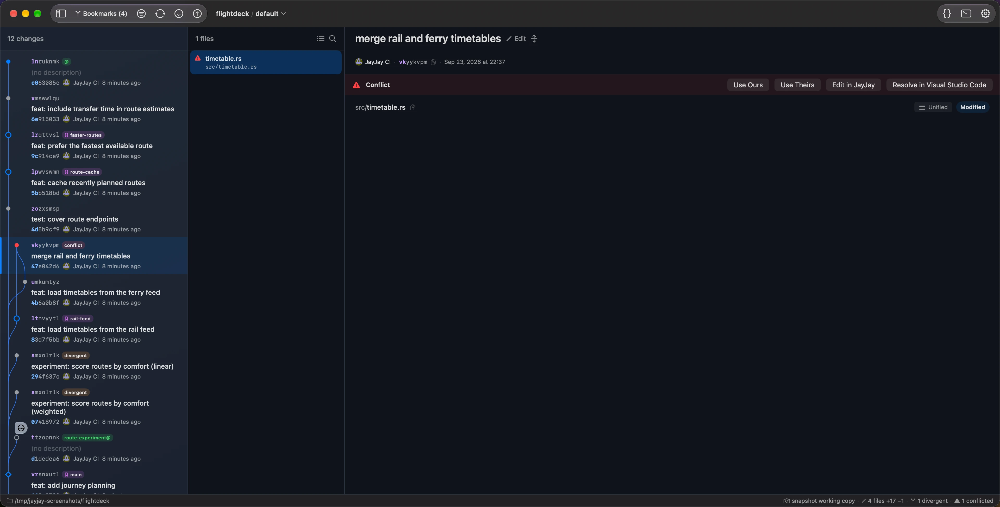
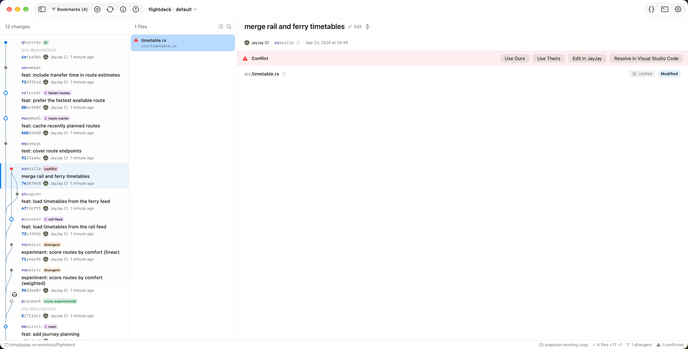
jj resolve.Inspection Tools #
- File Annotate shows blame information with a syntax-highlighted gutter and lets you navigate to the responsible change.
- File History lists revisions that modified the selected file.
- Change Evolution shows prior versions of a rewritten change with operation labels such as snapshot, describe, rebase, squash, and split. Entries can be compared against the current version.
- Right-click an evolution entry to copy its commit id or a
jj restorerecovery command.
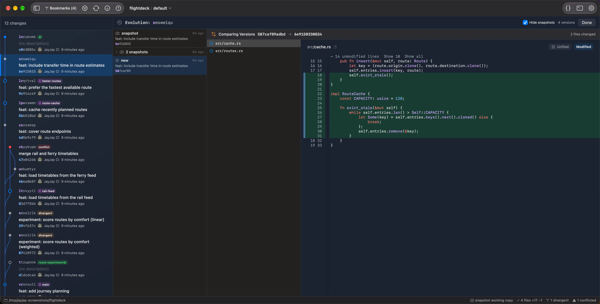
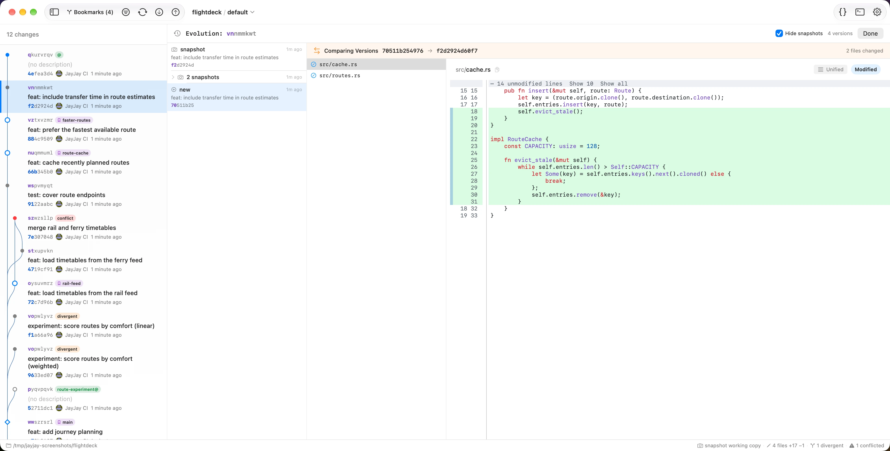
Command Palette #
- Open the command palette with
Cmd+Shift+Pand search built-in actions by name. - Type
jj <args>or! <args>to run raw jj commands inline. Output appears inside the palette and can be copied. - Command history is available during the session, so repeated jj commands are easy to recall.
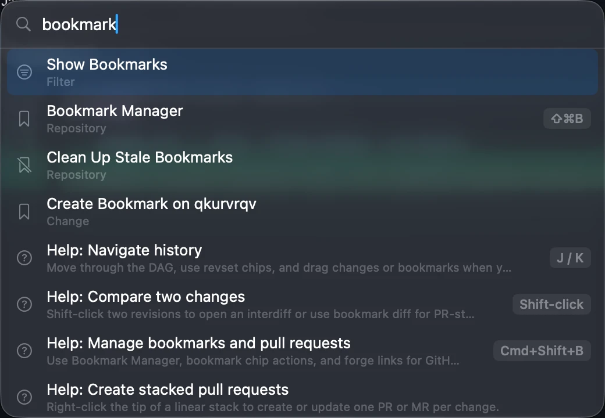
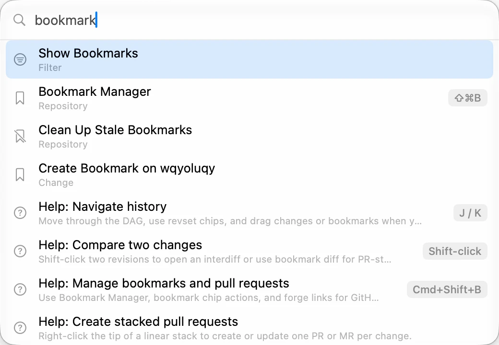
! prefix.Tools & Settings #
- Configure appearance, diff behavior, editor, terminal, jj settings, and app metadata in Settings. JayJay checks for jj availability and detects supported AI providers.
- Pick a font family and adjust zoom with
Cmd++,Cmd+-, andCmd+0. - Open files in external editors such as VS Code, VSCodium, Cursor, Zed, Xcode, or Vim. Cursor launches with
--classicso it opens in editor mode rather than its agent window. - Open terminals such as Terminal.app, iTerm2, or Ghostty at the repository path.
- Commit avatars can come from GitHub or Gravatar. Multi-window mode keeps one window per repository and deduplicates URL-scheme launches.
- Help menu links open JayJay, jj documentation, and issue reporting.
GPUI Shell Alpha #
- Build and run it from source with
just gpuiorjust gpui /path/to/repo. - GPUI targets a shared native shell for macOS, Linux, and Windows while the released macOS app remains SwiftUI.
- Current GPUI coverage includes graph browsing, diffs, file history, annotate, evolog, file review, bookmark manager, filesystem refresh, command palette, raw jj commands, native appearance tracking, and diff text selection/copy.
- Early write coverage includes editing descriptions and committing from the commit box.
- Remaining GPUI work is tracked in the roadmap.
Keyboard Shortcuts #
| Cmd+Shift+P | Command palette |
| Cmd+F | Find in diff |
| Cmd+R | Refresh |
| Cmd+O | Open repository |
| Cmd++ / Cmd+- / Cmd+0 | Zoom in, zoom out, reset zoom |
| Cmd+Shift+B | Bookmark Manager |
| Cmd+Shift+U | Undo from jj operation log |
| Space | Toggle selected file reviewed |
| Shift+Click | Compare two revisions |
| j / k | Move through graph rows |
| Ctrl+N / Ctrl+P | Move to next or previous item |